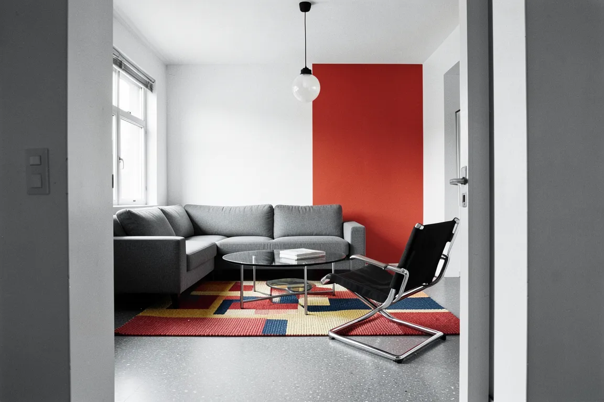

interior · 1919–1933 · also: Bauhaus room, Neues Wohnen, New Living
The rooms that the Bauhaus workshops in Weimar and Dessau designed and furnished. Tubular steel, glass, lacquer and woven wool stand in white rooms with one primary-colour wall; each object is a prototype for industry, and the room is a tool for living.

Core thesis
A room is a machine for daily life, and industry can make each of its parts well and for everyone.
Design principles
Place furniture on two orthogonal axes, parallel to the walls, and never mirror one side of the room in the other.
Paint one wall plane in one primary colour, red, yellow or blue, and keep the other planes white, grey or black.
Use 3 materials in the furniture: chrome-plated tubular steel, glass and lacquered wood; add woven wool or canvas for the seats.
Keep each piece open in frame: a cantilever or a tube outline, so that the floor shows through 50% or more of its footprint.
Build storage as modular cabinets on a 60 cm module, flush with the wall and free of handles in relief.
Light each zone with one visible functional lamp: an opal globe, a glass-shade table lamp or an adjustable arm lamp.
Leave 60% of the floor bare, in linoleum or sealed board of one colour.
Anti-patterns
Historical ornament, mouldings or carved wood
Overstuffed upholstery with skirts, fringes or buttons
A mirrored formal layout about a centre line
Patterned wallpaper or floral fabric
Curved organic forms other than the bent steel tube
Hidden light sources and warm amber glow without a visible lamp